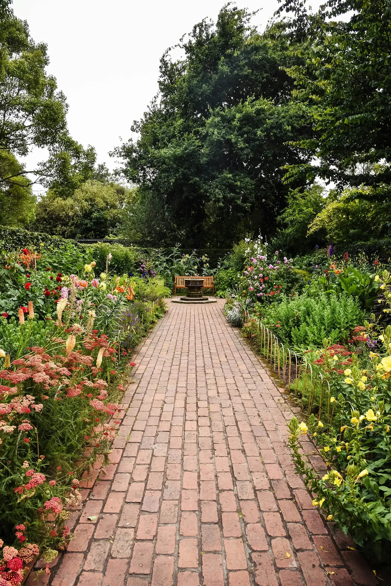

엘라라가 삶은 언제나 정원과 얽혀 있었다. 그녀는 낡은 집으로 이사 온 날, 연약한 버드나무 묘목을 처음 심었다. 세월이 흐르면서 그녀는 자신의 삶을 가꾸듯 정원을 가꾸었고, 정원이 색과 향기로 가득한 생생한 태피스트리로 피어나는 것을 지켜보았다. 이제 황혼기에 접어든 그녀의 정원은 그녀 자신의 사라져가는 생명력을 비추고 있었다. 밤이 되면 정원은 줄어들었고, 그것은 그녀의 피할 수 없는 끝을 향한 조용한 카운트다운이었다.
엘라라는 두렵지 않았다. 그녀는 사랑과 웃음, 그리고 상실로 가득 찬 충만한 삶을 살았다. 줄어드는 정원은 죽음의 전조가 아니라 삶의 순환적인 본질을 부드럽게 일깨워주는 것이었다. 꽃이 피고 지듯이 그녀 또한 그럴 것이다.
그녀는 남아있는 식물들을 돌보며 하루를 보냈다. 시들어가는 장미들에게 격려의 말을 속삭이고, 마지막 남은 고집스러운 덩굴을 격자를 따라 부드럽게 이끌었다. 매일 밤, 그녀는 달빛의 은은한 빛을 받으며 현관에 앉아 정원이 사라지는 것을 지켜보았다. 여기 장미 덤불, 저기 백합 한 무리, 과거로 사라지는 추억처럼 사라져갔다.
정원은 균일하게 줄어들지 않았다. 어떤 날 밤에는 큰 부분이 사라져 한때 무성했던 풍경에 커다란 구멍을 남겼다. 다른 날 밤에는 거의 알아차릴 수 없을 정도로 여기저기서 아주 조금만 사라지기도 했다. 그것은 때로는 격동적이고 때로는 고요한 그녀 자신의 삶의 리듬과 같았다.
어느 날 저녁, 지는 해의 마지막 빛줄기가 지평선에 입맞춤을 할 때, 엘라라는 한때 거대했던 정원의 잔해 속에 서 있는 자신을 발견했다. 침입하는 어둠에 맞서 꿋꿋이 서 있는 작은 제비꽃 무리와 늙은 버드나무만 남아 있었다.
엘라라는 미소를 지었다. 삶이라는 여정에서 그녀의 첫 번째 동반자인 버드나무는 그녀의 마지막 동반자가 될 것이다. 그녀는 튼튼한 나무줄기에 기댔고, 거친 나무껍질은 그녀의 피부에 익숙한 편안함을 주었다. 부드러운 바람이 잎사귀를 스치며 시간과 영원의 비밀을 속삭였다.
엘라라는 눈을 감았고, 그녀의 마음속에는 그녀가 그토록 사랑스럽게 키운 꽃처럼 추억이 피어났다. 자녀들의 웃음소리, 남편의 포옹의 따뜻함, 쓰라린 이별의 슬픔. 그 모든 것이 그녀의 삶, 잘 살아온 삶의 태피스트리에 짜여 있었다.
마지막 제비꽃이 밤에 항복하자 엘라라는 깊은 평화가 자신을 감싸는 것을 느꼈다. 그녀의 호흡은 느려졌고, 심장 박동은 버드나무 가지의 부드러운 흔들림을 닮아갔다. 그리고 그렇게 그녀의 삶의 작품의 잔해에 둘러싸여 엘라라는 마지막 숨을 쉬었다.
그녀의 정원은 조용히 남아, 자연과 조화롭게 살아온 삶의 침묵의 증거가 되었다. 그리고 엘라라가 떠났지만, 그녀의 영혼은 대지의 구조에 짜여져 바람 속의 조용한 속삭임, 오래된 버드나무의 심장 속의 부드러운 윙윙거림으로 남아 있었다.
Elara’s life had always been intertwined with the garden. She had planted the first sapling, a fragile willow, the day she moved into the old house. Over the years, she nurtured the garden as she nurtured her own life, witnessing it flourish into a vibrant tapestry of colours and scents. Now, in her twilight years, the garden mirrored her own fading vitality. It shrank at night, a silent countdown to her inevitable end.
Elara wasn’t afraid. She had lived a full life, rich with love, laughter, and loss. The shrinking garden wasn’t a harbinger of death, but a gentle reminder of the cyclical nature of life. Just as the flowers bloomed and wilted, so too would she.
She spent her days tending to the remaining plants, whispering words of encouragement to the dwindling roses, gently guiding the last stubborn vine along the trellis. Each night, she would sit on the porch, bathed in the silver glow of the moon, watching the garden retreat. A rosebush here, a patch of lilies there, disappearing like memories fading into the past.
The shrinking wasn’t uniform. Some nights, large sections would vanish, leaving gaping holes in the once lush landscape. Other nights, the retreat was almost imperceptible, a mere inch here and there. It was like the rhythm of her own life, sometimes turbulent, sometimes serene.
One evening, as the last rays of the setting sun kissed the horizon, Elara found herself standing amidst the remnants of her once grand garden. Only a small patch of violets and the old willow remained, standing defiant against the encroaching darkness.
Elara smiled. The willow, her first companion in this journey called life, would be her last. She leaned against its sturdy trunk, its rough bark a familiar comfort against her skin. The gentle breeze rustled the leaves, whispering secrets of time and eternity.
Elara closed her eyes, memories blooming in her mind like the flowers she had so lovingly nurtured. The laughter of her children, the warmth of her husband’s embrace, the bittersweet sorrow of goodbyes. All woven into the tapestry of her life, a life well lived.
As the last violet surrendered to the night, Elara felt a profound sense of peace settle over her. Her breathing slowed, her heartbeat mimicking the gentle sway of the willow branches. And just like that, surrounded by the remnants of her life’s work, Elara breathed her last.
The garden, her garden, remained still, a silent testament to a life lived in harmony with nature. And even though Elara was gone, her spirit lingered, woven into the very fabric of the earth, a quiet whisper in the wind, a gentle hum in the heart of the old willow tree.